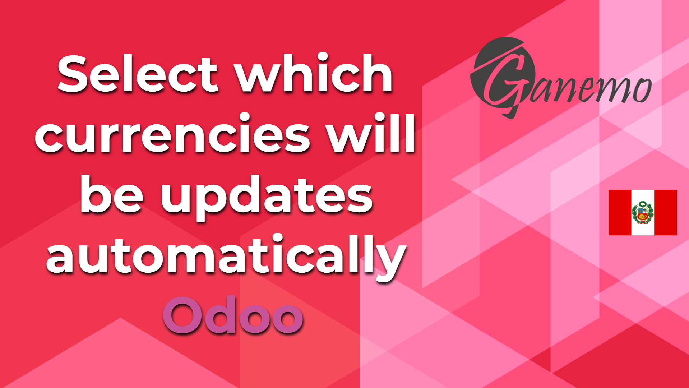

<section class="oe_container oe_dark">
    <div class="oe_row oe_spaced">
        <div class="oe_span8">
            
        </div>
        <div class="oe_span8">
            <span>
                Add a Boolean to the coins to decide whether to automatically register the rate using the Odoo service.
                This is very useful, because you can have the automatic rate update active, however, some currencies may not
                want to update them through a different service.</span>
        </div>
    </div>
</section>
